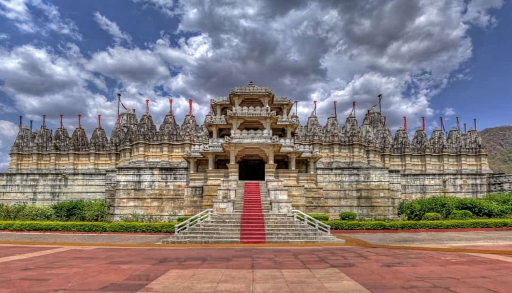

Ancient Period, up to 1200 AD Rajput clans emerged and held their sway over different parts of Rajasthan from about 700 AD. Before that, Rajasthan was a part of several republics. It was a part of the Mauryan Empire. Other major republics that dominated this region include the Malavas, Arjunyas, Yaudhyas, Kushans, Saka Satraps, Guptas and Hunas. The Rajput clans ascendancy in Indian history was during the period from the eighth to the twelfth century AD. The Pratihars ruled Rajasthan and most of northern India during 750-1000 AD. Between 1000-1200 AD, Rajasthan witnessed the struggle for supremacy between Chalukyas, Parmars and Chauhans. Medieval Period, 1201 - 1707 Around 1200 AD a part of Rajasthan came under Muslim rulers. The principal centers of their powers were Nagaur and Ajmer. Ranthambore was also under their suzerainty. At the beginning of the 13th century AD, the most prominent and powerful state of Rajasthan was Mewar. Modern Period, 1707 - 1947 Rajasthan had never been united politically until its domination by Mughal Emperor - Akbar. Akbar created a unified province of Rajasthan. Mughal power started to decline after 1707. The political disintegration of Rajasthan was caused by the dismemberment of the Mughal Empire. The Marathas penetrated Rajasthan upon the decline of the Mughal Empire. In 1755 they occupied Ajmer. The beginning of the 19th Century was marked by the onslaught of the Pindaris.
